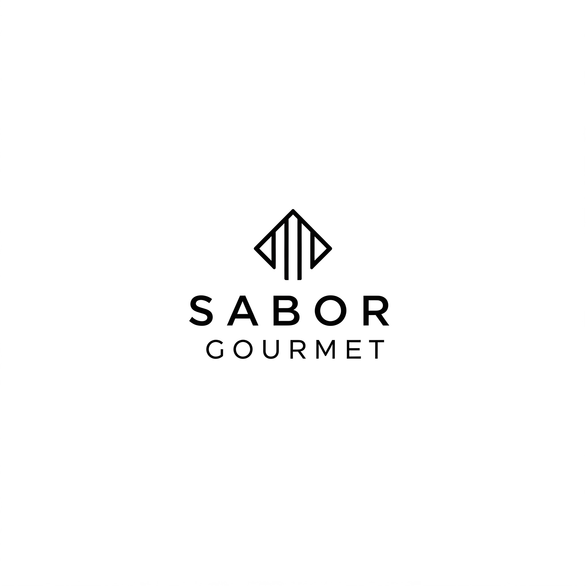

Sabor Gourmet
Cardápio
-
Entradas
Foto da Entrada Nome da Entrada Preço Descrição Bruschetta de tomate e manjericão R$ 25,00 Pedaços de pão italiano tostado cobertos com tomate fresco, manjericão, azeite de oliva e parmesão ralado. Caprese R$ 30,00 Mozzarella de búfala fresca, tomate cereja, manjericão e vinagre balsâmico. 
Calamari frito R$ 35,00 Calamari frito com molho marinara e limão. -
Pratos Principais
Foto do Prato Nome do Prato Preço Descrição Risoto de camarão com limão siciliano R$ 65,00 Risoto cremoso feito com camarões frescos, limão siciliano, vinho branco e manteiga. Filé mignon com molho de cogumelos R$ 75,00 Filé mignon grelhado com molho de cogumelos frescos e purê de batatas. 
Salmão com crosta de ervas R$ 80,00 Salmão fresco grelhado com crosta de ervas finas, purê de batata doce e aspargos. -
Sobremesa
Foto da Sobremesa Nome da Sobremesa Preço Descrição 
Mousse de chocolate belga R$ 35,00 Mousse cremosa de chocolate belga com raspas de chocolate e frutas vermelhas. 
Torta de maçã com crumble de canela R$ 40,00 Torta de maçã com crumble crocante de canela, servida com sorvete de creme. Crème brûlée R$ 45,00 Creme de baunilha com crosta de açúcar caramelizado.